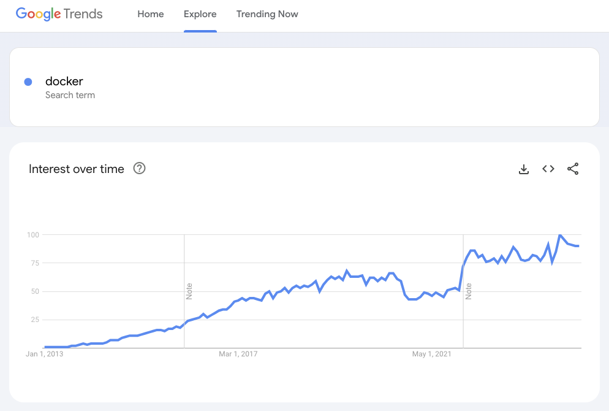

name: inverse layout: true class: center, middle, inverse --- name: impact layout: true class: center, middle, impact --- name: centered layout: true class: center, middle --- layout: false class: title name: title .content[ .center.pic-600[  ] .align-center.v-align-bottom.no-bullets[ - presentation by: Tiago Carreira ] ] --- layout: false template: impact class: title name: agenda # Agenda .content.align-left[ .left-column[ - [What is Docker?](#what-is-docker) - [Docker Basics](#docker-basics) - [How to get started](#get-started) - [Multi-container applications](#multi-containers) - [Docker for development](#docker-for-dev) - [Tips and Best Practices](#tips) - [Improving Dockerfiles](#improving-dockerfiles) ] .right-column[ - [Dockerfile](#dockerfile) - [Docker-compose](#docker-compose) - [Volumes](#volumes) - [Layers](#layers) ] ] ??? - [What is Docker](#what-is-docker), [how it compares to VMs](#tech-comparison), [pros/cons](#pros-and-cons) - [Docker basics](#docker-basics): [containers](#containers), [images](#images), [dockerfiles](#dockerfile) - [How to get started](#get-started): [Install docker](#install-docker) + demos [1](#demo1)+[2](#demo2)+[3](#demo3)+[4](#demo4) - [Persistence](#persistence): [Volumes](#volumes) - [Multi-container applications](#multi-containers): [Docker-compose](#docker-compose) - [Docker for development](#docker-for-dev): [Debug](#debug) - [Tips and Best Practices](#tips): [Improving Dockerfiles](#improving-dockerfiles) - [Table of Contents](#toc) --- template: inverse # Out of the scope<br><br> docker-machine<br> docker swarm<br> kubernetes (k8s)<br> docker registry<br> cloud<br> elephants<br> ??? This related topics are out of the scope for today --- name: what-is-docker template: impact .content[ <br> # What's All The Fuss About  ] ??? - Let's check the basics about Docker - Increasingly being used - Open source project since 2013 --- .left-column[ # What Docker IS - Tool for creating and manage containers - Lightweight and fast - Able to run on Linux, MacOS and Windows - Great for microservices - Both for Devs and SysAdmins (fully DevOps) ] ??? - . - Containers are an OS-level virtualization. We talk about containers later. - . - Lightweight => No need for the OS. May be as lightweight as the running binary - Fast to deploy => No need to initialize all the OS - Able to run on Linux, MacOS and Windows - Linux: docker-ce - MacOS, Windows: Docker Desktop - Windows applications must run in Windows hosts - . - ? How much time for a new member from zero to fully ready dev environment ? - Devs may have a fully dev ready workstation in minutes, not hours (installing docker included) - It's a "documentation" for Devs and SysAdmins -- .right-column[ # What Docker is NOT - Virtual Machine - Intended to be used as a VM (but may be) - Intended to be used as a regular server - Magic that solves all your problems ] ??? ------- - the Container runs on the same kernel as the host. - Do not use it as a VM: - don't ssh into it - don't tweak a runnning container - Do not use it as a regular server - Don't install every application/software inside one container - Think about application isolation: one (micro)service per container - It's not magic. Although mostly easy, you need some effort for non-trivial stuff --- name: tech-comparison # Technology comparison ## Physical Server (old days) - One server → One application - Slow deployment times - Huge costs - Wasted resources - Difficult to scale - Difficult to migrate - Difficult to maintain --- # Technology comparison ## Hypervisor Virtualization (modern days) .left-column[ - Better resource pooling - Easier to scale - Cloud support - Elasticity - Pay as you go ] .right-column[ - Resources allocation - CPU - RAM - Storage - Operating System - More applications → More resources (~linear growth) ] ??? - VM are better - But still a problem with wasted resources --- # Technology comparison ## Containers (Future) - Applications run directly on the kernel - Better resource management - Faster - Lighter / Storage requirements - Faster to scale - Security ??? - It's not just future, it is already here. - No need to pre-alocate resources - No need to boot the OS - Take advantage of COW* - Scale like VM, but faster - Security - no need for ssh, or other dependencies (* later) --- # VM vs Container .pic[  ] ??? - The lack of Guest OS enables - Faster boot up - Less resources: CPU/RAM/Storage - Better resource management --- name: pros-and-cons # Docker Pros & Cons .left-column[ ## Pros - Easy to get started - Great community & Widely used - Portable - Light and fast - Works on Linux + MacOS + Windows - Works as documentation - Easy to install dependencies - COW: Copy-On-Write ] ??? - really easy. If you don't know yet, you will know in the end - Docker has become a standard in the container insdustry and beyond - Lots of software support docker (as a quick start/installation)- just use git - Portable for devs and ops: - just share your dockerfile. No need to copy the whole VM (yeah, you can use vagrant. Try docker with vagrant if you may) - Portable: if I want to move to AWS, Azure, etc... it's easy(ier) - only the service running. No OS - bootup in seconds, no OS bootup - Need a mysql? There is an image for that. Postgres, Redis, Memcached, Mongo...... - COW: running 10 similar containers does not need 10x the storage. more on that later -- .right-column[ ## Cons - Not all applications benefit from containers - Not bare-metal performance - Persistent data storage - Graphical applications don't work well ] ??? - like production database - not useful for super-mainframe-single_unit-legacy-very_important-performance_sensitive service - persistence storage is achieved with volumes - But this Cons are usually irrelevant for most use cases --- name: docker-basics template: impact .content[ # The Basics ] ??? Let's check/review what are containers and images --- name: containers # Docker container "A container is a standard unit of software that packages up code and all its dependencies so the application runs quickly and reliably from one computing environment to another" ??? - citation from docker website - So what does this means? -- - Contains all software dependencies - Applicational isolation - Runs directly on the kernel - Instance of Docker Image ??? - no need to install any dependency on the host - A docker host may have multiple containers, unaware and isolated of each other - may be compared with the old 'portable software' vs 'regular installed software' --- name: images # Docker image "A Docker container image is a lightweight, standalone, executable package of software that includes everything needed to run an application: code, runtime, system tools, system libraries and settings." ??? - citation from docker website - So what does this means? -- - Template for running a container - Referenced list of layers - Layer: a list of changes to the filesystem - Immutable ??? - An image does not run, only a container does so - layers: more on that later - immutable: every change on a running container is not stored on the image Analogy with Object Oriented Programming: - Images -> Classes - Containers -> Objects --- name: dockerfile # Dockerfile .left-column[ - Blueprint of a Docker Image - Text file - List of ordered instructions (commands) - Documentation ] ??? one last Basic - It's the instructions for building an image - It's just a text file - with instructions - Also states as documentation - layer cache later -- .right-column[ ```dockerfile FROM ubuntu RUN apt-get update <red>!!!</red> RUN apt-get install cowsay <red>!!!</red> CMD ["cowsay", "Hello world"] ``` ] ??? - **DISCLAIMER**: For those who know docker already, I will fix this later - As you can see, it's just text file - Each command (FROM, RUN) creates a layer - First command is **FROM** (mandatory). It is the base template for our image - More commands later --- template: impact name: get-started .content[ # Let's get started ] --- name: install-docker # Install Docker - Windows - Docker Desktop - https://docs.docker.com/docker-for-windows/install/ - Mac - Docker Desktop* - https://docs.docker.com/docker-for-mac/install/ - Linux - apt-get install docker-ce (can be outdated) - Brain dead easy way: `wget -qO- https://get.docker.com | sh` - Other way: https://docs.docker.com/install/ ??? - Don't install from your regular app management. It's almost useless - Windows/Mac: Docker Desktop - Linux - just use the script or - do it manually by following the docs (still not hard) -- *Since 2022, Docker for Desktop is licenced (paid) for big Companies.<br> You can try other alternatives. (Personal suggestion: [colima](https://github.com/abiosoft/colima)) --- # Sanity check Docker ```no-highlight $ docker --version Docker version 25.0.2, build 29cf629222 ``` ```no-highlight $ docker run hello-world Hello from Docker! This message shows that your installation appears to be working correctly. ... ``` --- template: inverse # Demo Time ??? In order to get this easier, I will start demoing before talking about other COMMANDS and basics --- name: demo1 # Demo 1 .left-column[ ## Demo Project Goals - Fast test a container ].right-column[ ## Learning Goals - docker ] .no-column[ ## Learning commands ```no-highlight docker run -i -t <image_name> [<command>] # -i, --interactive # -t, --tty ``` ] ??? - docker run hello-world # and watch downloading - docker run -i -t ubuntu /bin/bash - x=0 - echo $x - echo $(( x+=1 )) - while true; do echo $(( x+=1 )); sleep 1; done --- name: demo2 # Demo 2 .left-column[ ## Demo Project Goals - Build an infinite counter - Bash counter ].right-column[ ## Learning Goals - Build Docker Images - Base images - New commands: FROM, ENTRYPOINT, CMD ] .no-column[ ## Learning commands ```no-highlight docker build -t <image_name> <context_path> docker run <image> ``` ] ??? - Create a file named `Dockerfile`: ```dockerfile FROM ubuntu STOPSIGNAL sigkill CMD x=0; while true; do echo $(( x+=1 )); sleep 1; done ``` - `docker build -t my_demo2 .` - `docker run my_demo2` - (ctrl+c to stop the container) Note: entrypoint vs cmd ```dockerfile FROM ubuntu ENTRYPOINT ["echo", "Hello"] CMD ["World"] ``` - `docker build -f 2.0.Dockerfile -t mydemo2.0` - `docker run my_demo2.0` - `docker run my_demo2.0 People` --- # Demo 2.1 .left-column[ ## Demo Project Goals - Build an infinite counter - Bash counter ].right-column[ ## Learning Goals - New commands: COPY, RUN ] .no-column[ ## Learning commands ```no-highlight docker run <+>-d</+> <image> docker logs [-f] <container> docker ps docker stop ``` ] ??? - Create a `counter.sh`: ```bash #!/bin/bash x=0 while true; do echo $(( x+=1 )) sleep 1 done ``` ```dockerfile FROM ubuntu COPY counter.sh /counter.sh RUN chmod +x /counter.sh CMD /counter.sh ``` - docker build -t my_demo2.1 . - docker run **-d** my_demo2.1 - docker logs - docker ps - docker stop --- name: demo3 # Demo 3 .left-column[ ## Demo Project Goals - Http server - Static content ].right-column[ ## Learning Goals - Published ports - Bind volumes ] .no-column[ ## Learning commands ```no-highlight docker run --name <container_name> <image> docker run -p <host_port:container_port> <image> docker run -v <host_path:container_path> <image> ``` ] ??? - https://hub.docker.com/ - nginx image - How to use this image ```dockerfile FROM nginx COPY static-html /usr/share/nginx/html ``` - docker build -t my_demo3 . - docker run -d --name demo3 -p 9090:80 my_demo3 - docker ps + http://localhost:9090 - docker run -d --name demo3 -p 9090:80 -v "$(pwd)/static-html:/usr/share/nginx/html" my_demo3 - change index.html and refresh the page --- name: persistence template: impact .content[ # Persistence ] --- name: volumes # Volumes - Persisting data - Sharing data between containers - Types - Bind mounts (`docker run -v /path-on-host:/data`) - Named volume (`docker run -v vol_name:/data`) - Tmpfs (not persistent) - Other volumes - driver_opts (eg: NFS) ??? - Docker containers do not persist data once removed - The same volume may be used by multiple containers, allowing sharing files - Bind mount: specific path on the host is mounted to the container - Named volume: still mounted from host to container, but managed by docker - tmpfs: memory only - Other volumes: NFS --- name: multi-containers template: inverse # How about multi-container services? ??? So far so good, but most services need dependencies - http-proxy - cache - database - queue service - etc... --- name: docker-compose template: impact .content[ # <strike>docker-compose</strike><br>docker compose ] ??? enter docker-compose - Tool for managing multi-container apps - included as a docker-cli plugin now - https://docs.docker.com/compose/intro/history/ - compose v2 since 2020: > Version two of the Docker Compose command-line binary was announced in 2020, is written in Go, and is invoked with docker compose. Compose V2 ignores the version top-level element in the compose.yml file. --- # docker-compose.yml .left-column[ - services - image - ports - environment - ... - volumes - ... - networks - ... ] ??? - docker-compose.yml: yaml file describing the multi-container app - describe services (image, ports, etc...) - describe other configs for network and volumes (out of the scope) -- .right-column.small[ ```yaml <-->version: '3.3' services: db: image: 'mysql:8.0' <...> wordpress: image: "wordpress:latest" ports: - '8000:80' environment: WORDPRESS_DB_HOST: db:3306 WORDPRESS_DB_NAME: wordpress <...> volumes: db_data: ``` ] ??? - no need for version anymore > Version two of the Docker Compose command-line binary was announced in 2020, is written in Go, and is invoked with docker compose. Compose V2 ignores the version top-level element in the compose.yml file. --- template: inverse name: demo4 # Demo Time --- # Demo 4 .left-column[ ## Demo Project Goals - Start a wordpress site ].right-column[ ## Learning Goals - Docker-compose - Environment variables - Named volumes ] .no-column[ ## Learning commands ```no-highlight docker-compose up -d docker-compose ps docker-compose logs <service> docker-compose [-f] stop docker volume (ls|rm) ``` ] ??? - A wordpress needs is dependent on a mysql db - https://docs.docker.com/compose/ > Get started with WordPress - Copy the example to a `docker-compose.yml` - `docker-compose up -d` - `docker-compose ps` - `docker-compose logs wordpress` - customize wordpress - `docker-compose stop` + `ps` + `down` + `ps` - test wordpress is up + `docker-compose down` - `docker volumes ls` + `docker volumes rm` --- name: debug template: inverse # How about debug with Docker? --- # Debug with Docker - Just like remote debug - Aware of the things under the hood - Expose debugging port - Configure debugger port ??? - It's less simple than straight forward development - It's just like remote debugging - You need to know how it works - You need to know ports - **Example Demo?** --- class: title name: tips .content[ .center.pic-600[  ] # Tips and Best Practices<br><br> ] ??? Some very useful tips for advance usage # Let's have a Break? --- name: improving-dockerfiles template: impact .content[ # Improving Dockerfiles ] --- # Dockerfile - File - Set of instructions - Blueprint of an image ??? Very basically... -- # Areas of improvements - Image size - (Incremental) build time - Consistency/Repeatability - Maintainability - Security ??? - not limited to... --- # Example project Basic Java Spring Hello world web app ```no-highlight drwxr-xr-x 2 9.4M Dec 3 09:44 .git/ -rw-r--r-- 1 656 Dec 4 12:20 Dockerfile drwxr-xr-x 2 6.1M Dec 4 09:44 docs/ -rw-r--r-- 1 1.7K Dec 3 09:48 pom.xml -rw-r--r-- 1 1.0K Dec 4 10:12 README.md drwxr-xr-x 4 44K Dec 3 09:48 src/ drwxr-xr-x 2 17M Dec 4 09:50 target/ ``` ??? simple: - project on git repo - some files: - Dockerfile - pom.xml - some dirs: - src - target --- # Let’s improve this Dockerfile ```dockerfile FROM debian COPY . /app RUN apt-get update RUN apt-get -y install openjdk-8-jdk ssh emacs CMD ["java", "-jar", "/app/target/app.jar"] ``` ??? This dockerfile - simply copy everything for the container - install jdk and some tools - run a built jar --- # Let’s improve this Dockerfile ```dockerfile FROM debian COPY . /app RUN apt-get update RUN apt-get -y install openjdk-8-jdk ssh <-->emacs</--> <+>vim</+> CMD ["java", "-jar", "/app/target/app.jar"] ``` .pic-15.align-right[  ] --- name: layers # Order matters for caching ```dockerfile FROM debian <-->COPY . /app</--> RUN apt-get update RUN apt-get -y install openjdk-8-jdk ssh vim <+>COPY . /app</+> CMD ["java", "-jar", "/app/target/app.jar"] ``` ??? - images are a group of layers - each dockerfile command builds a layer - that layer is cached - a layer is rebuilt if - a line is changed - files checksum differ - previous layer is rebuilt --- # More specific COPY to limit cache bust ```dockerfile FROM debian RUN apt-get update RUN apt-get -y install openjdk-8-jdk ssh vim <-->COPY . /app</-> <+>COPY target/app.jar /app.jar</-> CMD ["java", "-jar", "<-->/app/target</-->/app.jar"] ``` ??? you don't need all src inside the container --- # Identify cachable units ```dockerfile FROM debian *RUN apt-get update *RUN apt-get -y install openjdk-8-jdk ssh vim COPY target/app.jar /app.jar CMD ["java", "-jar", "/app.jar"] ``` ??? - remember when a layer is cached if line does not change? - apt-get update will not update forever - what happens when want to force a new package version? (next slide) --- # Identify cachable units ```dockerfile FROM debian *RUN apt-get update *RUN apt-get -y install openjdk-8-jdk ssh<+>=1:7.4p1-10+deb9u7</+> vim COPY target/app.jar /app.jar CMD ["java", "-jar", "/app.jar"] ``` ??? - remember when a layer is cached if line does not change? - apt-get update will not update forever --- # apt-get update + install ```dockerfile FROM debian <-->RUN apt-get update</--> <-->RUN apt-get -y install openjdk-8-jdk ssh vim</--> *RUN apt-get update \ * && apt-get install -y \ * openjdk-8-jdk \ * ssh \ * vim COPY target/app.jar /app.jar CMD ["java", "-jar", "/app.jar"] ``` ??? - always keep apt-get update + install together - protips: - one package per line - alphabetical order --- name: not-pack-dependencies # Don't pack unnecessary dependencies ```dockerfile FROM debian RUN apt-get update \ && apt-get install -y \ openjdk-8-jdk<--> \</--> <-->ssh \</--> <-->vim</--> COPY target/app.jar /app.jar CMD ["java", "-jar", "/app.jar"] ``` ??? It's bad practice to ssh into a container<br \> Use `exec` if needed but only in dev --- # Use --no-install-recommends ```dockerfile FROM debian RUN apt-get update \ && apt-get install -y <+>--no-install-recommends</+> \ openjdk-8-jdk COPY target/app.jar /app.jar CMD ["java", "-jar", "/app.jar"] ``` ??? Intended most of the times --- # Remove package manager cache ```dockerfile FROM debian RUN apt-get update \ && apt-get install -y --no-install-recommends \ openjdk-8-jdk <+>\</+> <+>&& apt-get clean \</+> <+>&& rm -rf /var/lib/apt/lists/*</+> COPY target/app.jar /app.jar CMD ["java", "-jar", "/app.jar"] ``` ??? as a layers are cached after all commands are run, the apt-get cache is never stored But now the dockerfile is a little more complex --- name: official-images # Reuse official images when possible ```dockerfile <-->FROM debian</--> <-->RUN apt-get update \</--> <--> && apt-get install -y --no-install-recommends \</--> <--> openjdk-8-jdk \</--> <--> && apt-get clean \</--> <--> && rm -rf /var/lib/apt/lists/*</--> <+>FROM openjdk</+> COPY target/app.jar /app.jar CMD ["java", "-jar", "/app.jar"] ``` ??? (from next slide) - Reduce time spent on maintenance (frequently updated with fixes) - Reduce size (shared layers between images) - Pre-configured for container use - Built by smart people - Bonus: scanned for vulnerabilities on Docker Hub --- # Reuse official images when possible ```dockerfile FROM openjdk COPY target/app.jar /app.jar CMD ["java", "-jar", "/app.jar"] ``` - Reduce time spent on maintenance (frequently updated with fixes) - Reduce size (shared layers between images) - Pre-configured for container use - Built by smart people - Bonus: scanned for vulnerabilities on Docker Hub --- name: tags # Use more specific tags ```dockerfile FROM openjdk<-->:latest</--> FROM openjdk<+>:8</+> COPY target/app.jar /app.jar CMD ["java", "-jar", "/app.jar"] ``` Image documentation: https://hub.docker.com/_/openjdk ??? - when not specified, latest is used - latest is an anti-pattern: - just a tag - not guaranteed to exist - major version upgrades - not always the last published image --- # Use more specific tags ```dockerfile FROM openjdk:8 FROM openjdk:8<+>-jre</+> COPY target/app.jar /app.jar CMD ["java", "-jar", "/app.jar"] ``` Image documentation: https://hub.docker.com/_/openjdk ??? - we don't need a JDK. - the java runtime environment is enough --- # Look for minimal flavors ```dockerfile FROM openjdk:8-jre FROM openjdk:8-jre<+>-slim</+> COPY target/app.jar /app.jar CMD ["java", "-jar", "/app.jar"] ``` Image documentation: https://hub.docker.com/_/openjdk ??? Many times, there are slimmer versions of the image --- # Look for minimal flavors ```dockerfile FROM openjdk:8-jre-<-->slim</--> FROM openjdk:8-jre-<+>alpine</+> COPY target/app.jar /app.jar CMD ["java", "-jar", "/app.jar"] ``` Image documentation: https://hub.docker.com/_/openjdk ??? or even consider using alpine version - based on alpine - linux minimal distro (<5MB) **disclaimer** there are specific cases wher it cannot be used. Check accordingly to the project --- name: size # Size does matter ```no-highlight REPOSITORY TAG SIZE openjdk 8 624MB openjdk 8-jre 443MB openjdk 8-jre-slim 204MB openjdk 8-jre-alpine 83MB ``` - Faster to download/build - Faster to deploy/upgrade - Less bandwidth - Less storage --- name: how-to-find-larger-layers template: inverse # Where is the elephant? Tips on how to find larger layers ??? Skip to [Checkpoint 1](#checkpoint-1) - So, how can I find which layers are responsible for the increased size? --- # docker image history (initial dockerfile) ```no-highlight $ docker image history maven-hello-world:initial IMAGE CREATED BY SIZE 7e79f96f032a /bin/sh -c #(nop) CMD ["java" "-jar" "/ap… 0B *b85fc4b6eb47 /bin/sh -c apt-get -y install openjdk-8-jd… 668MB ba3d455f8208 /bin/sh -c apt-get update 16.3MB ab1a2587e9fa /bin/sh -c #(nop) COPY dir:8db399a5922bd10… 2.75MB 3bbb526d2608 /bin/sh -c #(nop) CMD ["bash"] 0B *<missing> /bin/sh -c #(nop) ADD file:370028dca6e8ca9… 101MB ``` ??? - **docker image history** shows the layers which compose the image - To be read bottom-up (the last layer in on top) - The base image is around 100MB - But the apt-get install part is +650MB --- # docker image history (dockerfile so far...) ```no-highlight $ docker image history maven-hello-world:checkpoint1 IMAGE CREATED BY SIZE 141498904e4e /bin/sh -c #(nop) CMD ["java" "-jar" "/ap… 0B *125c66d5e6d4 /bin/sh -c #(nop) COPY file:49d9555ff44c04… 2.7MB *d4557f2c5b71 /bin/sh -c set -x && apk add --no-cache … 78.6MB <missing> /bin/sh -c #(nop) ENV JAVA_ALPINE_VERSION… 0B <missing> /bin/sh -c #(nop) ENV JAVA_VERSION=8u181 0B <missing> /bin/sh -c #(nop) ENV PATH=/usr/local/sbi… 0B <missing> /bin/sh -c #(nop) ENV JAVA_HOME=/usr/lib/… 0B <missing> /bin/sh -c { echo '#!/bin/sh'; echo 's… 87B <missing> /bin/sh -c #(nop) ENV LANG=C.UTF-8 0B <missing> /bin/sh -c #(nop) CMD ["/bin/sh"] 0B *<missing> /bin/sh -c #(nop) ADD file:2ff00caea4e83df… 4.41MB ``` ??? as for the last dockerfile, - the base image is 4.41MB - apk add is <80MB --- # docker container diff ```no-highlight *$ docker build --no-cache <+>--rm=false</+> . Sending build context to Docker daemon 2.841MB Step 1/4 : FROM openjdk:8-jre-alpine ... Step 3/4 : RUN chmod +x /app.jar * ---> Running in 02f7f352548f ... Successfully built bc434fe0055b Successfully tagged maven-hello-world:checkpoint1 ``` ??? - Adicionally, **docker container diff** shows exactly what has changed inside of a container (from the previous image) - shows systemfs changes -- ```no-highlight $ docker container diff d2eef182c025 *C /app.jar ``` ??? *for notes only*: - Take note of the first character - A: Add (more bytes) - C: Change (wasted bytes) - D: Delete (saves nothing, only a filesystem marker in the next layer) --- template: inverse name: checkpoint-1 # Checkpoint ??? So, returning to our dockerfile --- # Differences in size ```no-highlight $ docker images \ --format "table {{.Repository}}:{{.Tag}}\\t{{.ID}}\\t{{.Size}}"\ --filter 'reference=maven-hello-world' REPOSITORY:TAG IMAGE ID SIZE maven-hello-world:initial 7e79f96f032a 788MB maven-hello-world:checkpoint bc434fe0055b 88.4MB ``` ??? - Our changes spared around 700MB - This means: - Less storage impact - Less network bandwidth - Less time spent --- # Initial dockerfile ```dockerfile FROM debian COPY . /app RUN apt-get update RUN apt-get -y install openjdk-8-jdk ssh emacs CMD ["java", "-jar", "/app/target/app.jar"] ``` ??? We started with this... -- # After some tweaks ```dockerfile FROM openjdk:8-jre-alpine COPY target/app.jar /app.jar CMD ["java", "-jar", "/app.jar"] ``` ??? ... and we are now with this. - Only simple steps until now - specific base image - copy only what we need - run as before --- template: inverse # Sh*t is about to get real --- name: dockerfile-as-documentation template: impact .content[ # Dockerfile as Documentation ] --- # Look for reproducibility ```dockerfile FROM openjdk:8-jre-alpine *COPY target/app.jar /app.jar CMD ["java", "-jar", "/app.jar"] ``` ??? - Let's look for reproducibility - Where did that `target/app.jar` came from? - Looks like it appears by dark magic spells - Which only the main sourcerer knows how to build --- name: build-from-source # Build from source ```no-highlight <-->FROM openjdk:8-jre-alpine</--> <+>FROM maven:3.6-jdk-8-alpine</+> <-->COPY target/app.jar /app.jar</+> <+>COPY pom.xml /app/</+> <+>COPY src /app/src</+> <+>RUN cd /app && mvn -e -B package</+> CMD ["java", "-jar", "/app/target/app.jar"] ``` ??? - let's rebuild everything - aim for dockerfile as documentation --- # Build from source ```dockerfile *FROM maven:3.6-jdk-8-alpine COPY pom.xml /app/ COPY src /app/src RUN cd /app && <=>mvn -e -B package</=> CMD ["java", "-jar", "/app/target/app.jar"] ``` ??? - Starting with maven as base image - Running the build command as part of the image build - Now our dockerfile documents the build process - But it still needs some optimizations --- # Don't repeat yourself ```dockerfile FROM maven:3.6-jdk-8-alpine <+>WORKDIR /app</+> COPY pom.xml <-->/app/</-->. COPY src <-->/app/</--><+>.</+>/src RUN <-->cd /app && </-->mvn -e -B package CMD ["java", "-jar", "/app/target/app.jar"] ``` ??? - First, we don't need to repeat all those `/app` - Instead of `cd` into a dir, we use `WORKDIR` --- # Cache dependencies ```dockerfile FROM maven:3.6-jdk-8-alpine WORKDIR /app COPY pom.xml . <+>RUN mvn -e -B dependency:resolve</+> COPY src ./src RUN mvn -e -B package CMD ["java", "-jar", "/app/target/app.jar"] ``` ??? - we can leverage cache, as seen before - dependencies change less than code itself - keep cached dependencies - helps building time (if we only change the code itself) --- # Identify build dependencies - Remove unecessary dependencies from final image ```dockerfile FROM <=>maven:3.6</=>-jdk-8-alpine WORKDIR /app *COPY pom.xml . *RUN mvn -e -B dependency:resolve *COPY src ./src RUN mvn -e -B package CMD ["java", "-jar", "/app/target/app.jar"] ``` ??? After this, we run into the same problem again: - Do not ship build dependencies **How can we do this?** --- template: inverse # Enter multi-stage builds --- name: multi-stage # Multi-stage builds ```dockerfile *FROM maven:3.6-jdk-8-alpine <+>AS builder</+> WORKDIR /app COPY pom.xml . RUN mvn -e -B dependency:resolve COPY src ./src RUN mvn -e -B package <-->CMD ["java", "-jar", "/app/target/app.jar"]</--> *<+>FROM openjdk:8-jre-alpine</+> <+>COPY --from=builder /app/target/app.jar /app.jar</+> <+>CMD ["java", "-jar", "/app.jar"]</+> ``` ??? - stages are defined by the keyword `FROM` - we have now 2 stages - keyword `AS` to name the stage and reference it later --- # Multi-stage builds ```dockerfile FROM maven:3.6-jdk-8-alpine <=>AS builder</=> WORKDIR /app COPY pom.xml . RUN mvn -e -B dependency:resolve COPY src ./src RUN mvn -e -B package *FROM openjdk:8-jre-alpine COPY <=>--from=builder</=> /app/target/app.jar /app.jar CMD ["java", "-jar", "/app.jar"] ``` ??? (behind the scenes) - on `docker build`: - get last stage by default (last FROM) - it references another stage (as `builder`), so build it --- # Multi-stage builds Checkpoint 1 ```dockerfile FROM openjdk:8-jre-alpine COPY /app/target/app.jar /app.jar CMD ["java", "-jar", "/app.jar"] ``` Checkpoint with multi-stage build ```dockerfile ... FROM openjdk:8-jre-alpine COPY <+>--from=builder</+> /app/target/app.jar /app.jar CMD ["java", "-jar", "/app.jar"] ``` ??? Last stage is very similar to what we had, but now Dockerfile "documents" the build process --- # Multi-stage builds uses - Separate build from runtime environment (lower image size) - Slight variations on images - DRY (Don’t Repeat Yourself) - Build/dev/test/lint environments - Concurrent stages - Platform-specific stages ??? - Separate build from runtime environment - as the example -- <br><br> more on this is ... <br> ... out of the scope for today --- template: inverse # What about security? ??? - The java is running as root inside the container - Despite that, there is already an isolation layer when running docker container - Just for the best practice thing --- template: impact name: non-root .content[ # Running as non-root ] --- # Add new user .left-column[ ## Debian ```dockerfile FROM debian:9-slim RUN mkdir -p /app \ * && useradd -U \ -c 'My User' \ -d /app \ -s /bin/bash \ -u 1234 \ myuser *USER myuser ``` ].right-column[ ## Alpine ```dockerfile FROM alpine:3.8 RUN mkdir -p /app \ * && adduser -D \ -g 'My User' \ -h /app \ -s /bin/ash \ -u 1234 \ myuser *USER myuser ``` ] ??? - You need to create a new user - debian: useradd - alpine: adduser - If an app dir exists, assign it to user's Home - USER myuser --- # Change files ownership ```dockerfile FROM openjdk:8-jre-alpine <+>RUN adduser -D myuser</+> COPY --from=builder /app/target/app.jar /app.jar <+>RUN chown myuser: /app.jar</+> <+>USER myuser</+> CMD ["java", "-jar", "/app.jar"] ``` ??? - note: this `RUN chown` is only academic (no need for it) -- But... ??? Everything is running fine. But... --- # copy-on-write side effects ```no-highlight $ docker image history maven-hello-world:checkpoint3 IMAGE CREATED BY SIZE 4ef7544b7c92 /bin/sh -c #(nop) CMD ["java" "-jar" "/a… 0B *5a260de4f985 /bin/sh -c chown myuser: /app.jar 2.7MB 6cea4c3e53bd /bin/sh -c #(nop) COPY file:a6075c989ff94… 2.7MB e8c32bbd0bcf /bin/sh -c adduser -D myuser 4.81kB d4557f2c5b71 /bin/sh -c set -x && apk add --no-cache … 78.6MB ... ``` ??? - Where did those 2.7MB come from? - COW duplicates a file on metadata changes --- # COPY --chown ```dockerfile FROM openjdk:8-jre-alpine RUN adduser -D myuser COPY --from=builder <+>--chown=myuser</+> /app/target/app.jar /app.jar <-->RUN chown myuser: /app.jar</--> USER myuser CMD ["java", "-jar", "/app.jar"] ``` ??? use `--chown` instead --- # Avoid extra space usage ```no-highlight $ docker images REPOSITORY:TAG IMAGE ID SIZE maven-hello-world:checkpoint3 4ef7544b7c92 88.4MB maven-hello-world:checkpoint4 90202191e597 85.7MB ``` ??? This case spares ~2MB -- ```no-highlight $ docker run -it maven-hello-world:checkpoint4 /bin/sh / $ whoami <=>myuser</=> / $ ls -FAlh / -rwxr-xr-x 1 root root 0 .dockerenv* -rw-r--r-- 1 <=>myuser</=> <=>myuser</=> 2.6M app.jar drwxr-xr-x 2 root root 4.0K bin/ ... ``` ??? With this changes, we have a non-root user Another quick win :) --- template: inverse name: for-devs # Volumes for Developers ??? - Devs users need to bind mount - But permissions... --- # Bind mount your code ```conf version: '3.3' services: app: image: 'myapp:latest' build: context: . dockerfile: Dockerfile volumes: - ./app:/app ports: - '8080:80' - '4000:4000' # debug ``` ??? - Usually for Development we can bind mount part of our workdir - But... --- # But... ooops ```no-highlight Error accessing /app: permission denied ``` ??? - But you could get some error like this. - Or you could end up with some files with a different owner on your workdir -- - The container user has a UID/GID - May differ from your UID/GID - Best scenario: your user UID/GID matches container user UID/GID --- name: fix-uid # Fixing UID/GID Possible solutions: - Run everything as root - Change permissions to 777 - Adjust each developers uid/gid to match image - Adjust image uid/gid to match developers - Change the container uid/gid from `run` or `compose` ??? - Lots of bad solutions that will result in: - Writing files as root or another user on your laptop - Making a different image per developer - Or still missing some edge cases (existing files owned by user in image) --- # Fixing UID/GID Possible solutions: - Run everything as root - Change permissions to 777 - Adjust each developers uid/gid to match image - Adjust image uid/gid to match developers - Change the container uid/gid from `run` or `compose` - **"... or we could use a shell script"** - Some Ops Guy ??? - There is a workaround with a shell script --- template: inverse # Disclaimer The following slide may not be suitable for all audiences ??? - Those developers that are disturbed by shell scripts may want to turn away for this next slide --- # Fixing UID/GID ```no-highlight # update the uid if [ -n "$opt_u" ]; then * OLD_UID=$(getent passwd "${opt_u}" | cut -f3 -d:) * NEW_UID=$(ls -nd "$1" | awk '{print $3}') if [ "$OLD_UID" != "$NEW_UID" ]; then echo "Changing UID of $opt_u from $OLD_UID to $NEW_UID" * usermod -u "$NEW_UID" -o "$opt_u" if [ -n "$opt_r" ]; then * find / -xdev -user "$OLD_UID" -exec chown -h "$opt_u" {} \; fi fi fi ``` This is part of `fix-perms.sh` ??? - This is part of a `fix-perms` shell script I package into my base image - The first highlighted line gets the UID of the user inside the container - The second highlight gets the UID of the file or directory mounted as a volume - If those two UID's do not match, I change the container to match the host with the `usermod` - And after running that `usermod`, I run a `chown` on any files still owned by the old UID inside the container --- # Fixing UID/GID ```no-highlight #!/bin/sh if [ "$(id -u)" = "0" ]; then fix-perms -r -u app -g app /code exec gosu app "$@" else exec "$@" fi ``` This is part of `/entrypoint.sh` ??? - That entrypoint checks if I'm root, and if so, fixes the /code permissions to match the app container uid - Then I have this `exec gosu` that drops from `root` to the `app` user and runs the cmd - In prod where I don't run as root, and have matched the prod uid's to match the image, this gets skipped and I exec the command - The end result is the cmd is running as the user as pid 1, all evidence of the entrypoint is gone from the process list, making it transparent --- # Fixing UID/GID ```conf version: '3.3' services: app: image: 'myapp:latest' build: context: . dockerfile: Dockerfile volumes: - ./app:/app ports: - '8080:80' - '4000:4000' # debug * user: "0:0" # dev only ``` ??? - The developer compose file is the same as before with one addition, the user is set to root. - The production compose file wouldn't have any of this - Prod will run as default app, with no volume mounts, build, or cmd. - Note when you restart the container, the app user has already been modified from before, so all the uid/gid changing steps get skipped on the second pass --- # Fixing UID/GID - Developers can run the same image and compose file on multiple systems - App runs with the developers individual uid/gid - Changes to `./app` are owned by the developer - Same image in prod can run without ever needing root ??? - The prod compose file wouldn't change the user, cmd, or volumes --- template: impact .content[ # What next ] --- name: devops-best-practices # DevOps Best practices .left-column[ - Documentation/maintainability - Dockerfile - docker-compose - Use tags and versioning - Production ready - Keep it short and fast - Keep it safe (no root) - Use secrets - Do not rely on `exec` into containers ] .right-column[ - Development ready - Docker volumes - Facilitate debug in dev (only) - Multi-environment ready - ENV variables - Smart defaults - High ~~uptime~~ availability by design - Healthchecks - Concurrency ready - Monitoring support ] ??? - Document with Dockerfile/docker-compose - Use smart tags and versioning (make it obvious what is running) - For DEV, allow debug (expose debug ports) and use volumes (quick change what is inside) - Configuration over environment variables - DO NOT thing about uptime, but THINK about avalability: - healthchecks - allow concurrency - good monitoring: send logs and expose metrics --- # References [1] Dockerfile Best Practices - Sebastiaan van Stijn<br> https://www.slideshare.net/Docker/dceu-18-dockerfile-best-practices [2] Tips and Tricks From A Docker Captain - Brandon Mitchell<br> https://github.com/sudo-bmitch/presentations [3] Docker Presentations<br> https://www.slideshare.net/Docker/presentations --- template: impact # <br>That's all folks .left-column[ <br><br><br><br><br> <br> .tiny[[https://tcarreira.github.io/presentations/docker-workshop](https://tcarreira.github.io/presentations/docker-workshop/)] ] .right-column[ <img src="img/warner-bros-michigan-j-frog-logo.png" height="340px"> ] --- name: toc # Table of Contents .left-column[ - [What is Docker](#what-is-docker) - [Technology comparison](#tech-comparison) - [Docker Pros & Cons](#pros-and-cons) - [Docker basics](#docker-basics) - [Containers](#containers) + [Images](#images) + [Dockerfiles](#dockerfile) - [Getting started](#get-started) - [Install docker](#install-docker) - [Demos 1](#demo1) + [Demos 2](#demo2) + [Demo 3](#demo3) - [Persistence (volumes)](#persistence) - [Docker compose](#docker-compose) - [Demo 4](#demo4) - [Debugging with Docker](#debug) ].right-column[ - [Tips and Best Practices](#tips) - [Improving Dockerfiles](#improving-dockerfiles) - [Layers cache](#layers) - [Don't pack everything](#not-pack-dependencies) - [Use official images](#official-images) + [Image Tags](#tags) - [Size does matter](#size) - [Checkpoint 1](#checkpoint-1) - [Dockerfile as Documentation](#dockerfile-as-documentation) - [Build from source](#build-from-source) - [Cache dependencies](#cache-dependencies) - [Multi-stage builds](#multi-stage) - [Run as non-root](#non-root) + [Fixing UID/GID](#fix-uid) - [DevOps Best practices](#devops-best-practices) ] --- template: inverse name: the-end # The end